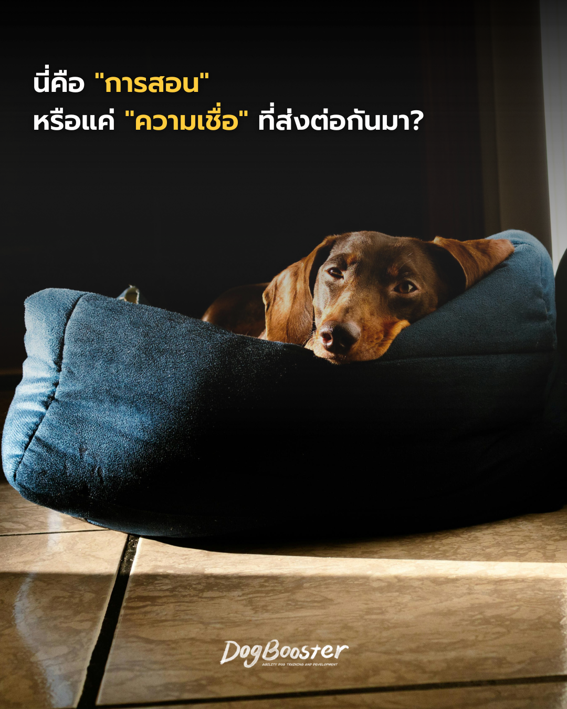

หลายคนที่เลี้ยงสุนัขคงเคยได้ยินกฎเหล่านี้มาไม่มากก็น้อย
กฎเหล่านี้ฟังดูเหมือนมีเหตุผล และถูกส่งต่อกันมานานจนกลายเป็น “สามัญสำนึก” ของคนเลี้ยงสุนัขจำนวนมาก แต่คำถามที่ควรชวนคิดคือ — สิ่งเหล่านี้เป็นการฝึกสุนัขจริง ๆ หรือเป็นแค่ความเชื่อที่ไม่มีหลักฐานรองรับ?
ความเชื่อเรื่องการห้ามนั่งด้วย ห้ามกินก่อน ห้ามนอนด้วย มีรากมาจาก “ทฤษฎีลำดับชั้นในฝูง” (dominance theory) ที่ได้รับความนิยมในวงการฝึกสุนัขช่วงกลางศตวรรษที่ 20 โดยอิงจากการศึกษาพฤติกรรมหมาป่าในกรงขังยุคแรก ๆ ซึ่งพบว่าหมาป่าที่ถูกจับมาอยู่รวมกันแบบไม่เป็นธรรมชาติมีการแย่งชิงอำนาจกันสูง จึงมีการสรุปว่าสุนัขบ้านก็ต้องการ “ผู้นำฝูง” ที่ต้องแสดงอำนาจเหนือกว่าในทุกสถานการณ์ ไม่ว่าจะเป็นเรื่องพื้นที่ ลำดับการกิน หรือตำแหน่งที่นอน
ปัญหาคือ งานวิจัยในเวลาต่อมาพบว่าโครงสร้างฝูงหมาป่าตามธรรมชาติไม่ได้เป็นแบบ “แย่งชิงอำนาจ” อย่างที่เข้าใจกันแต่แรก แต่เป็นแบบ ครอบครัว (พ่อแม่ลูก) ที่ร่วมมือกันมากกว่าแข่งขันกัน และที่สำคัญกว่านั้น สุนัขบ้านก็ไม่ได้มีพฤติกรรมทางสังคมเหมือนหมาป่าป่าทุกประการ เพราะผ่านการอยู่ร่วมกับมนุษย์มานับหมื่นปีจนมีวิวัฒนาการทางสังคมของตัวเอง
นักพฤติกรรมสัตวแพทย์และนักฝึกสุนัขสายวิทยาศาสตร์ในปัจจุบัน — รวมถึง Susan Garrett ผู้บุกเบิกแนวทางการฝึกแบบเกม (games-based training) — จึงเน้นย้ำว่าพฤติกรรม “ไม่น่ารัก” ของสุนัข เช่น ขึ้นมาแย่งที่นั่ง ตอดอาหารจากมือ หรือดื้อบนเตียง ไม่ได้เกิดจากการที่สุนัข “คิดว่าตัวเองเป็นจ่าฝูง” แต่เกิดจากการที่ ไม่เคยถูกสอนขอบเขตที่ชัดเจน ต่างหาก
ในมุมมองพฤติกรรมศาสตร์ ปัญหาไม่ได้อยู่ที่ “นั่งด้วยกัน” “กินข้าวพร้อมกัน” หรือ “นอนเตียงเดียวกัน” — ตัวกิจกรรมเหล่านี้ไม่ใช่ต้นเหตุของปัญหาพฤติกรรม สิ่งที่เป็นปัญหาจริงคือการที่สุนัขไม่มี ทักษะควบคุมตัวเอง (impulse control) ในสถานการณ์เหล่านั้น เช่น
พูดง่าย ๆ คือ ปัญหาไม่ได้อยู่ที่ “สถานการณ์” แต่อยู่ที่ “ทักษะที่ยังไม่ถูกสอน” การห้ามทำกิจกรรมเหล่านี้ไปเลยจึงเป็นการ หลีกเลี่ยงปัญหา ไม่ใช่การแก้ปัญหา และไม่ได้ช่วยให้สุนัขเรียนรู้อะไรเพิ่มขึ้นเลย
เจ้าของสุนัขหลายคนที่มาปรึกษาเรื่องพฤติกรรม มักเล่าคล้ายกันว่า “ห้ามนั่งโซฟาด้วยเด็ดขาด เพราะกลัวจะเสียนิสัย” แต่พอถามลึกลงไปกลับพบว่าสุนัขตัวนั้นไม่เคยถูกสอนเลยว่า เมื่อนั่งด้วยกันแล้วต้อง “สงบ” อย่างไร หรือเมื่อถูกขอให้ลงจากโซฟาต้องทำอย่างไร ปัญหาที่แท้จริงจึงไม่ใช่การนั่งโซฟา แต่คือ ช่องว่างของทักษะ ที่ไม่เคยถูกฝึกมาก่อน
ข่าวดีคือ กิจกรรมทั้งหมดนี้สามารถทำร่วมกับสุนัขได้ตามปกติ เพียงแต่ต้องสอนสิ่งที่เขาต้องเรียนรู้ควบคู่ไปด้วย ไม่ใช่แค่ตั้งกฎห้ามลอย ๆ
การสอนเหล่านี้ไม่จำเป็นต้องใช้การลงโทษหรือแสดงอำนาจ แต่ทำได้ผ่านเกมฝึกที่สนุกและใช้แรงเสริมทางบวก (positive reinforcement) ซึ่งช่วยให้สุนัขเรียนรู้ทักษะควบคุมตัวเองได้อย่างมั่นคง โดยไม่ต้องแลกกับความสัมพันธ์ที่ใกล้ชิดกับเรา
กฎห้ามต่าง ๆ ที่ส่งต่อกันมาไม่ได้มาจากความเข้าใจพฤติกรรมสุนัขที่ถูกต้องเสมอไป สิ่งสำคัญไม่ใช่การห้ามไม่ให้ทำกิจกรรมร่วมกับสุนัข แต่คือ การสอนทักษะที่จำเป็นให้เขาก่อน เมื่อสุนัขมีทักษะควบคุมตัวเองที่ดีแล้ว เราก็สามารถนั่งด้วยกันได้ กินข้าวพร้อมกันได้ และนอนด้วยกันได้ โดยไม่ต้องกังวลว่าความสัมพันธ์ใกล้ชิดจะกลายเป็นปัญหาพฤติกรรม
บทความนี้อ้างอิงหลักการพฤติกรรมศาสตร์สุนัขร่วมสมัย และแนวทางการฝึกแบบเกม (games-based training) ของ Susan Garrett ซึ่งเน้นการสอนทักษะผ่านแรงเสริมทางบวกมากกว่าการควบคุมด้วยการแสดงอำนาจ
สมัครเรียนกับ DogBooster ปรึกษาการฝึกทักษะควบคุมตัวเองกับ DogBooster